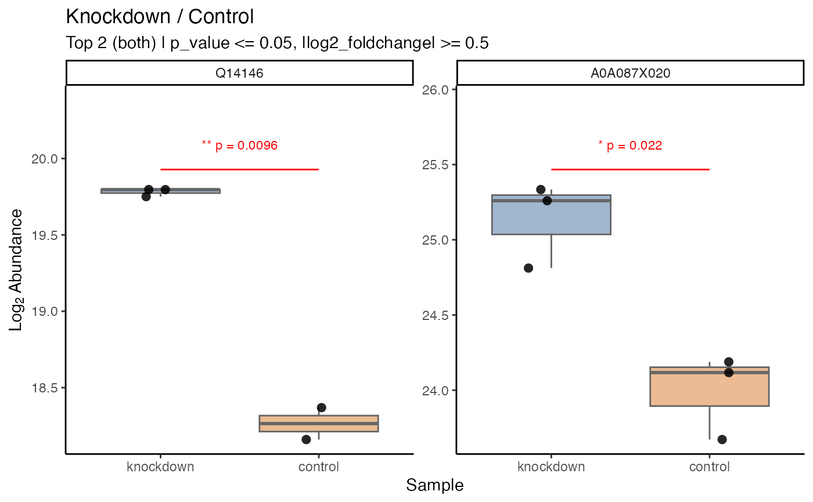

plot_expression() is a ggplot2 implementation for visualizing protein abundance
distributions across two sample conditions for top differentially expressed proteins.
The resulting plot is faceted by protein/annotation label, with the two samples
on the x-axis, log2 abundance on the y-axis, a boxplot representing the distribution,
and individual replicate points overlaid (filled circle for non-imputed, hollow circle
for imputed).
Usage
plot_expression(
data = NULL,
...,
log2fc_min = 1,
log2fc_column = "log2_foldchange",
significance_max = 0.05,
significance_column = "adj_p_value",
top_n = 10,
regulation = c("both", "up", "down"),
labels_column = "protein",
show_title = TRUE,
destination = "plot",
height = 6,
width = 8
)Arguments
- data
a tidyproteomics data object
- ...
two sample comparison expression (e.g.
knockdown/control)- log2fc_min
a numeric defining the minimum log2 foldchange threshold. Default is 1.
- log2fc_column
a character defining the column name of log2 foldchange values.
- significance_max
a numeric defining the maximum significance threshold. Default is 0.05.
- significance_column
a character defining the column name of significance values.
- top_n
an integer defining the top N proteins to plot post-filtering. Default is 10.
- regulation
a character defining direction:
"both"(default),"up", or"down".- labels_column
a character defining the annotation column for facet titles (default is
"protein").- show_title
input FALSE, TRUE for an auto-generated title or any character string.
- destination
a character string (
"plot","save","png","svg","tiff","jpeg").- height
a numeric plot height in inches. Default is 6.
- width
a numeric plot width in inches. Default is 8.
Examples
library(dplyr, warn.conflicts = FALSE)
library(tidyproteomics)
# subset for fast execution
hela_proteins <- hela_proteins %>% subset(description %like% "Ribosome")
#>
#> ℹ Subsetting data: description %like% Ribosome
#> ✔ Subsetting data: description %like% Ribosome ... done
#>
hela_proteins %>%
expression(knockdown/control) %>%
plot_expression(knockdown/control, log2fc_min = 0.5, significance_column = "p_value", top_n = 6)
#> ℹ .. expression::t_test testing knockdown / control
#> ✔ .. expression::t_test testing knockdown / control [66ms]
#>
#> # A tibble: 2 × 34
#> plot_label min_y max_y protein imputed n imputed_control imputed_knockdown
#> <fct> <dbl> <dbl> <chr> <dbl> <int> <dbl> <dbl>
#> 1 Q14146 18.2 19.8 Q14146 0 6 0 0
#> 2 A0A087X020 23.7 25.3 A0A087… 0 6 0 0
#> # ℹ 26 more variables: average_expression <dbl>, proportional_expression <dbl>,
#> # foldchange <dbl>, log2_foldchange <dbl>, p_value <dbl>, adj_p_value <dbl>,
#> # normalization <chr>, abundance_control_1 <dbl>, abundance_control_2 <dbl>,
#> # abundance_control_3 <dbl>, abundance_knockdown_1 <dbl>,
#> # abundance_knockdown_2 <dbl>, abundance_knockdown_3 <dbl>,
#> # description <chr>, biological_process <chr>, cellular_component <chr>,
#> # molecular_function <chr>, gene_id_entrez <chr>, gene_name <chr>, …
